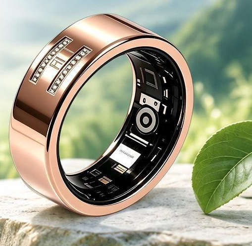

让健康，始终有人照看。
科技的下一步，
是人的照看。
02 / 精选实践
全部实践 ↗在真实生活里。

01 / 智能产品小小的指环，
小小的指环，
连接日常的变化。
SENSEN RING · 智能监测与健康服务
03 / 团队精选
完整团队 ↗专业，始终在场。


由五个中心协作，把技术、业务与交付组织成一条清楚的服务路径。
关心，
可以更长久。
从您的
真实需求开始。
个人与家庭健康服务 / 企业与行业合作
联系与沟通 ↗